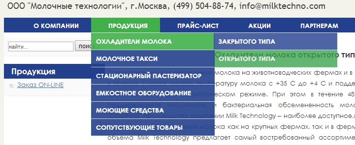
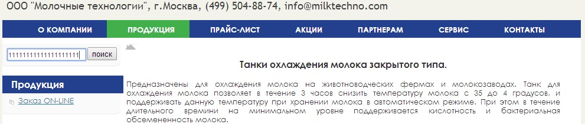

Анализ юзабилити сайта ООО "Молочные технологии"
В данной контрольной работе представлен анализ сайта ООО "Молочные технологии" http://www.milktechno.com/
1. Заголовок сайта
В заголовке сайта логотип занимает слишком много места, а контакты указаны под ним, вместо того, чтобы указать их справа от логотипа. Так же можно добавить в заголовок логотипы компаний - контрагентов, с которыми сотрудничает данная компания. Хоть это и не сильно заметно, но цвет фона логотипа отличается от цвета основного фона заголовка сайта.

2. Ограниченное количество символов в строке поиска
На данном сайте существует строка поиска, но в ней ограничено количество вводимых символов до 20 символов.
Чтобы поиск был удобным, следует придерживаться следующих правил:
1. В идеале форма поиска должна размещаться на всех страницах сайта в верхней области (традиционно, верхний правый угол).
2. Оптимальная длина поля для ввода запроса – 27-30 символов
3. Поиск на сайте должен быть только внутренним (по сайту). Не следует предлагать пользователям поиск на внешних ресурсах, в интернете, так как для этого существуют глобальные поисковые системы.
4. Оформление страницы с результатами поиска должно быть максимально приближенно к странице выдачи глобальных поисковых систем: содержать поле для ввода запроса с введенным посетителем запросом, список результатов должен содержать заголовок (со ссылкой), краткое описание, можно также добавить URL или раздел, к которому относится результат.
5. Используйте функцию проверки орфографии, как в глобальных поисковых системах. При вводе поискового запроса с ошибкой следует выводить строку «Возможно, Вы имели в виду [правильное написание запроса]?»

3. Отсутствие строки навигации
На данном сайте существует многоуровневое меню, вследствие чего пользователь может зайти достаточно далеко по ссылкам, а вернуться сразу на главную, или перейти на шаг назад у пользователя возможности нет. А также в логотипе отсутствует ссылка на главную страницу, т.е. по клику на логотип пользоатель не может перейти на главную.


4. Отсутствие ссылки на главную страницу и навигации
Главная страница – это лицо сайта, поэтому у пользователя всегда должна быть возможность С внутренних страниц сайта вернутся на главную страницу невозможно. Отсутствие ссылки на главную страницу может привести в замешательство неопытных пользователей. Опытные пользователи привыкли, что могут перейти на главную страницу при клике на логотип компании, к сожалению, здесь такой функционал отсутствует, что может привести к потере определенной посетителей сайта.
Навигация
1. Рекомендуется делать одинаковую навигацию на всех страницах сайта.
2. В шапке сайта и в «подвале» должна находиться контактная информация (хотя бы телефон).
3. На странице должно содержаться название раздел.
4. Желательно расположение указателя «Вы находитесь здесь» (выделение текущего раздела в меню).